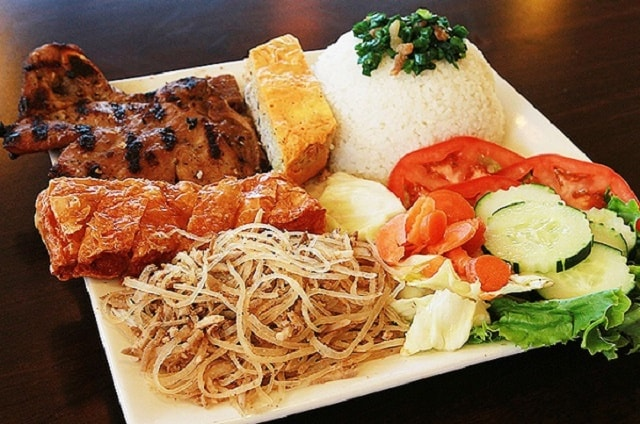
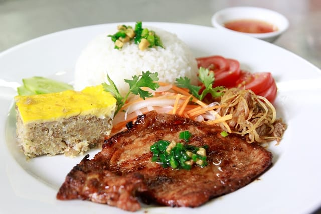

1. Cơm Tấm
Cơm Tấm là một trong những món ngon của Sài Gòn, là một phần không thể tách rời của Sài Gòn. Tại sao lại nói như vậy, bởi vì những người sinh sống nơi đây có thể ăn món này cả ngày từ bữa sáng đến bữa tối không thấy chán. Thậm chí cơm tấm còn là sự lựa chọn hoàn hảo cho những bữa ăn khuya, nhất là những người phải đi làm đêm.
Một đĩa cơm tấm đầy đủ có nhiều thứ lắm. Bạn sẽ thấy “choáng ngợp” khi trước mắt mình là một đĩa cơm tấm có vô số thứ. Đầu tiên là phải có cơm tấm rồi, kế đến là thịt sườn nướng vàng óng một lớp mỡ, thơm ngon trông thật là hấp dẫn, chả trứng, trứng ốp la, lạp xưởng và chút đồ chua. Để phần cơm trở nên hấp dẫn, người ta sẽ chan thêm một chút mỡ hành hay tóp mỡ để cho món cơm Tấm trở nên thật hấp dẫn.
Không chỉ đầy đặn và ngon mắt thôi đâu, cơm Tấm còn mang một hương vị đặc biệt mà du khách khi đã tới đây ăn rồi thì sẽ không bao giờ quên. Với cơm Tấm, mọi sự sáng tạo nằm gọn trong chén nước mắm dùng kèm. Nước mắm ngọt thấm vào từng hạt cơm hòa quyện với sự béo ngậy của mỡ hành mang tới một hương vị mà khó ai có thể cưỡng lại được. Đặc biệt là phần thịt nướng được tẩm ướp kĩ lưỡng nướng trên than hồng càng quyến rũ du khách khi tới đây ăn. Để một góc độ nào đó thấy được sự tỉ mỉ và khó tính của những người sành ăn.

Giá một phần cơm Tấm trung bình chỉ từ 25.000 – 40.000 đồng là đủ cho một bữa ăn chất lượng cho một người. Ở Sài Gòn có rất nhiều địa chỉ cơm Tấm nhưng mách cho bạn một địa chỉ, bạn ghé qua số 113 Nguyễn Phi Khanh, quận 1. Có thể tới đây ăn thử vì ở đây lúc nào cũng đông khách và tới cả những người khó tính nhất cũng khen là ngon. Còn ngần ngại gì khi đặt chân tới đây mà bạn không tới thưởng thức luôn cơm Tấm Sài Gòn thơm ngon, béo ngậy này.